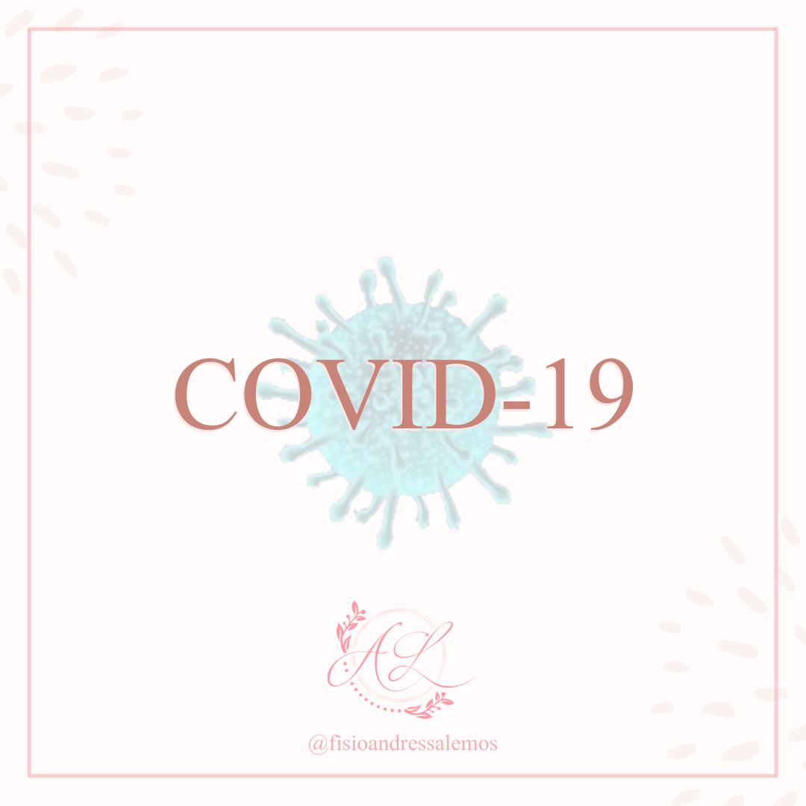
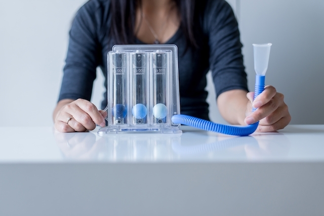
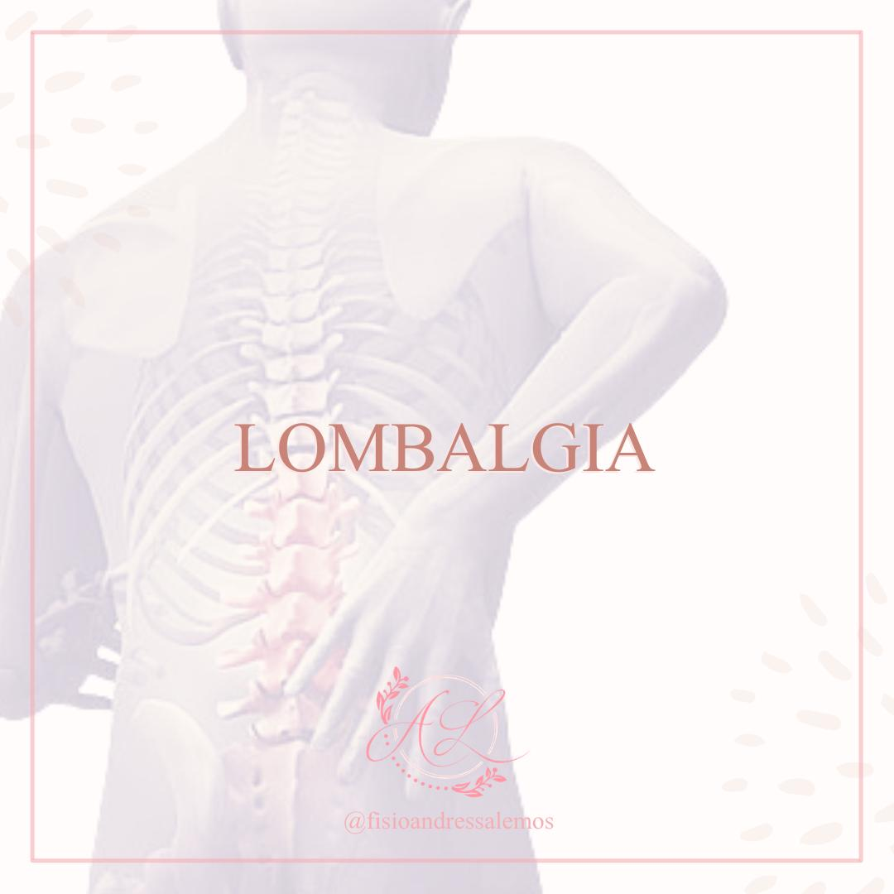

Quem sou eu
-
Pós-graduanda em Fisioterapia Pélvica - Uroginecologia Funcional pela Faculdade Inspirar, graduada em Fisioterapia pelo
Centro Universitário Avantis - UNIAVAN (2020).
Formação Acadêmica
Formação Complementar

Saiba mais sobre Covid-19 e Fisioterapia Respiratória
-
🦠 Desde o início do ano de 2020 o Brasil vem se ajustando a novas
regras de convivência social, consequência de uma pandemia causada pelo novo Coronavírus,
denominado SARS-CoV-2, vírus que causa uma patologia infecciosa grave, chamada de COVID-19.
-
🦠 Os primeiros casos foram relatados como uma pneumonia viral não identificada, que logo teve
evolução para a síndrome do desconforto respiratório agudo (SDRA).
-
🦠 No dia 30 de janeiro de 2020, a Organização Mundial de Saúde (OMS) declarou emergência
de saúde pública, e em 11 de março do mesmo ano a reconheceu como uma pandemia, visto que em
menos de três meses a COVID-19 se espalhou rapidamente em vários países (cada pessoa infectada
tem a capacidade de transmitir a doença para 3 a 5 pessoas em média).
-
🦠 Desde o início do ano de 2020 o Brasil vem se ajustando a novas
regras de convivência social, consequência de uma pandemia causada pelo novo Coronavírus,
denominado SARS-CoV-2, vírus que causa uma patologia infecciosa grave, chamada de COVID-19.
-
🦠 Estudos apontam que a presença de comorbidades como diabetes, doença pulmonar obstrutiva
crônica (DPOC) e hipertensão arterial podem agravar o quadro clínico do indivíduo infectado,
podendo desencadear quadros de dispnéia e sintomas torácicos graves, tendo potencial em idosos.
-
🦠 Os indivíduos gravemente acometidos pela infecção acabam permanecendo muito tempo acamados,
gerando uma inatividade física prolongada na maioria dos casos, podendo agravar algumas patologias
pré-existentes, sendo elas cardiovasculares, respiratórios e musculares.
-
🦠 Tendo em vista que esses pacientes graves posteriormente irão apresentam sequelas físicas,
sendo resultado da imobilidade prolongada, onde inclui a instabilidade postural, tromboembolismo,
úlceras de pressão, dentre outras, a fisioterapia vem se destacando a cada dia mais no âmbito
hospitalar e vem ganhando um espaço que é fundamental para a recuperação dos pacientes acometidos
pela COVID-19 desde o início da pandemia.
-

Fisioterapia Respiratória
A fisioterapia respiratória é uma especialidade da fisioterapia que visa a prevenção e o
tratamento de praticamente todas as doenças que atingem o sistema respiratório como a asma,
bronquite, insuficiência respiratória e tuberculose, por exemplo. Ela deve ser sempre realizada
pelo fisioterapeuta em casa, na clínica, no hospital ou no trabalho.

Saiba mais sobre Lombalgia
-
• A lombalgia é o desconfortou ou dor (de intensidade variável) que ocorre na região lombar,
e que muitas vezes está associada a desordens musculoesqueléticas dessa região.
-
• É a segunda doença crônica mais prevalente no país, apontada como um problema de saúde pública
mundial, com impacto negativo na qualidade de vida e na funcionalidade do acometido, ocasionando
uma série de alterações na mecânica corporal, como diminuição da amplitude de movimento, redução
da flexibilidade e fadiga dos músculos paravertebrais.
-
• De origem multifatorial ou inespecífica, na maioria das vezes, não se consegue associar
sua ocorrência a uma condição clínica específica.
-
• É consenso entre diversas pesquisas a fisioterapia ser adotada como método de primeira escolha
no seu tratamento, buscando promover a melhora do quadro álgico (dor), da funcionalidade e da
qualidade de vida a partir da melhora das condições musculoesqueléticas, da diminuição da tensão
e do estresse, além do potencial ganho de força muscular.
Pilates
🤸🏻♀️ Método de condicionamento físico criado por Joseph H. Pilates (1883-1967), com a finalidade de combinar
a respiração com os movimentos do corpo,
promovendo o fortalecimento muscular e a circulação, melhora do condicionamento físico geral e da
flexibilidade, melhora do equilíbrio e favorecimento da postura,
além de aprimorar os níveis de consciência corporal e coordenação motora.
🤸🏻 Os exercícios podem ser feitos por qualquer pessoa (atletas, sedentários, idosos, crianças,
gestantes), seja feito de maneira individual ou em pequenos grupos, utilizando aparelhos (
criados por J. Pilates), bem como sem os aparelhos, como nos movimentos realizados
no chão (mat pilates).
🤸🏻♂️ A atividade é direcionada às necessidades individuais de cada aluno.
"Se aos 30 anos você está sem flexibilidade e fora de forma, você é um velho. Se aos 60 anos você é flexível e forte, você é um jovem."
Joseph Pilates
Uroginecológica
A fisioterapia uroginecológica é uma área da fisioterapia que abrange diferentes especialidades
como urologia, ginecologia, coloproctologia e sexologia.
Ela é indicada para o tratamento e prevenção dos problemas relacionados ao enfraquecimento
da musculatura do assoalho pélvico.
No caso das mulheres, essa estrutura anatômica sustenta bexiga, intestino, reto, útero e demais órgãos
do aparelho genital.
A fisioterapia uroginecológica é muito importante para garantir o bom funcionamento dos aparelhos reprodutor,
urinário e digestório. Com os exercícios e cuidados terapêuticos propostos é possível tratar e prevenir
disfunções sexuais, problemas de incontinência e, inclusive, preparar a musculatura do assoalho pélvico para
a gestação, parto e pós-parto.
Sendo assim, podemos afirmar que a fisioterapia uroginecológica desempenha papel fundamental para o bem-estar
e saúde feminina.
Tratamento e Reabilitação
Quando não houve tempo de prevenir, a fisioterapia uroginecológica atua na reabilitação e tratamento de
diferentes disfunções pélvicas. Entre elas podemos listar:
Incontinência ou retenção urinária;
Dispareunia e demais disfunções sexuais;
Prolapsos genitais;
Constipação;
Incontinência fecal.
Por se tratar de questões consideradas desconfortáveis ou constrangedoras, muitas pacientes podem
desenvolver problemas psicológicos concomitantemente. Entretanto, é importante frisar que existem
tratamentos para as disfunções e quanto antes forem diagnosticadas, melhor é a recuperação.
Fisioterapia Preventiva
Fisioterapia preventiva é uma abordagem que tem como objetivo ajudar a prevenir o surgimento de
doenças e problemas com o corpo. Muito usada por atletas e idosos, ela também pode ser facilmente
adaptada para qualquer idade, já que a função principal é proporcionar uma vida com mais qualidade e saúde.
Ela pode ser uma ferramenta poderosa ao complementar as atividades físicas. Além disso, também é muito
recomendada em ambiente de trabalho, pois minimiza os riscos de acidentes.
A característica mais importante da fisioterapia preventiva é a sua fácil adaptação à realidade da pessoa,
respeitando as suas limitações, necessidades e riscos. O tratamento identifica as fraquezas que o indivíduo
possui, trabalhando em cima de cada uma delas.
Áreas de atuação da fisioterapia preventiva
Como falamos acima a fisioterapia preventiva tira proveito de diversas técnicas para estimular o alongamento,
fortalecer e relaxar a musculatura e exercícios respiratórios. Vejamos algumas formas de atuação:
Muitas empresas promovem a ginástica laboral, oferecendo programas que visam melhorar a qualidade do trabalho,
bem como a saúde de todos os funcionários. São adotados exercícios direcionados para a pessoa, promovendo
maior desempenho e fortalecimento e relaxando a musculatura. Essas ações devem ser direcionadas para o
perfil e necessidade de cada trabalhador, auxiliando na recuperação psicológica, reduzindo o estresse e a
fadiga.
Os atletas podem se beneficiar com a melhora do gesto esportivo, além de prevenir o surgimento de lesões
decorrentes dos treinos e da prática esportiva, essas medidas buscam o aprimorando do desempenho no esporte
e rendimentos nas competições e treinos.
Para a terceira idade há uma preocupação com a funcionalidade do organismo. A fisioterapia preventiva atua
para evitar que doenças comuns do envelhecimento se instalem e para preservar a função motora do indivíduo,
reduzindo quedas e acidentes. As atividades também serão individualizadas de acordo com as necessidades de
cada paciente, porém devem trazer conforto enquanto trabalha todas as funções corporais.
Fisioterapia Desportiva
A atuação do profissional de fisioterapia desportiva é voltada tanto para os atletas profissionais quanto
para aqueles que praticam esporte regularmente de forma amadora.
A fisioterapia desportiva é um ramo da medicina do esporte que trata, recupera e busca evitar lesões causadas
pela prática de exercícios físicos. Os profissionais especializados nesta área têm como objetivo proporcionar
o retorno à atividade física no menor prazo possível.
Quando sua atuação está ligada a uma equipe esportiva, como um time de futebol ou de vôlei, ele trabalha em
parceria com o treinador e o preparador físico. Neste caso, seu papel é avaliar a atuação do paciente durante a
prática do exercício e traçar planos de correção postural e de prevenção do surgimento de novas lesões. Esta é
uma área bastante promissora.
A fisioterapia desportiva é só para atletas profissionais?
Não. Este profissional pode atuar em academias, clubes, postos de saúde e clínicas. Neste caso, ele é responsável
por desenvolver uma rotina de exercícios para aliviar as dores de pacientes com doenças crônicas e ajudar a minimizar
complicações. Ainda neste campo, o profissional pode organizar e/ou gerir grupos operativos de pessoas com limitações
físicas semelhantes, para que trabalhem juntas.
Esta área de especialização está em franca expansão e vem ganhando visibilidade por causa das lesões de
grandes atletas e da divulgação na imprensa. Para quem está em início de carreira, uma boa alternativa
para entrar neste mercado de trabalho é atender esportistas e atletas amadores.